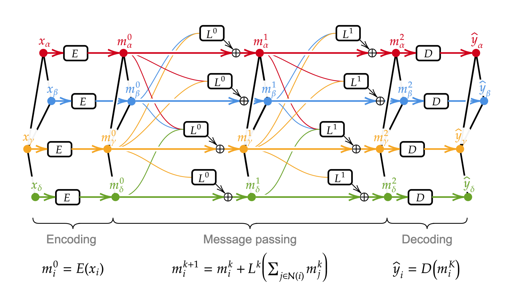
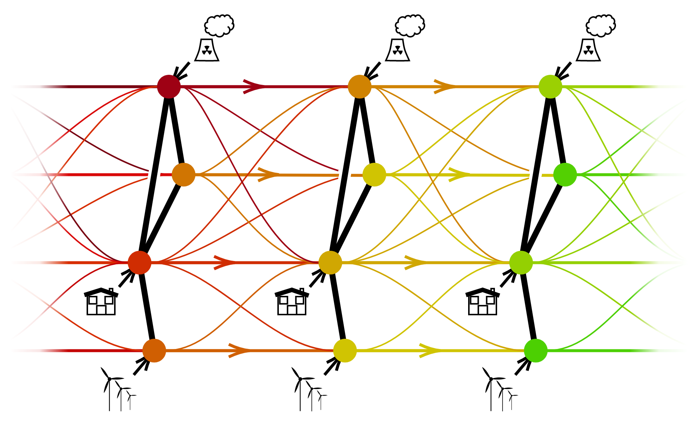
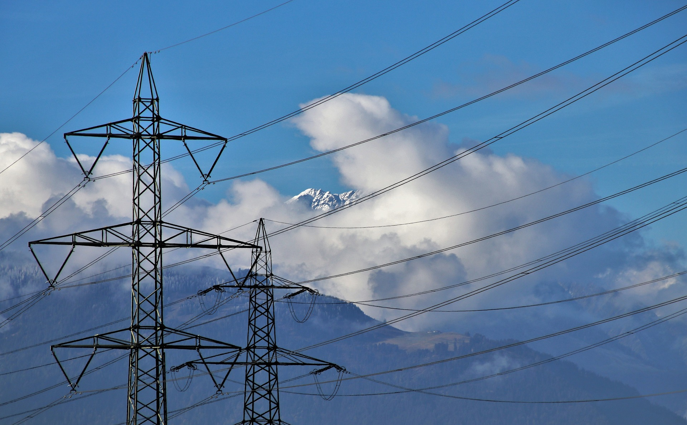
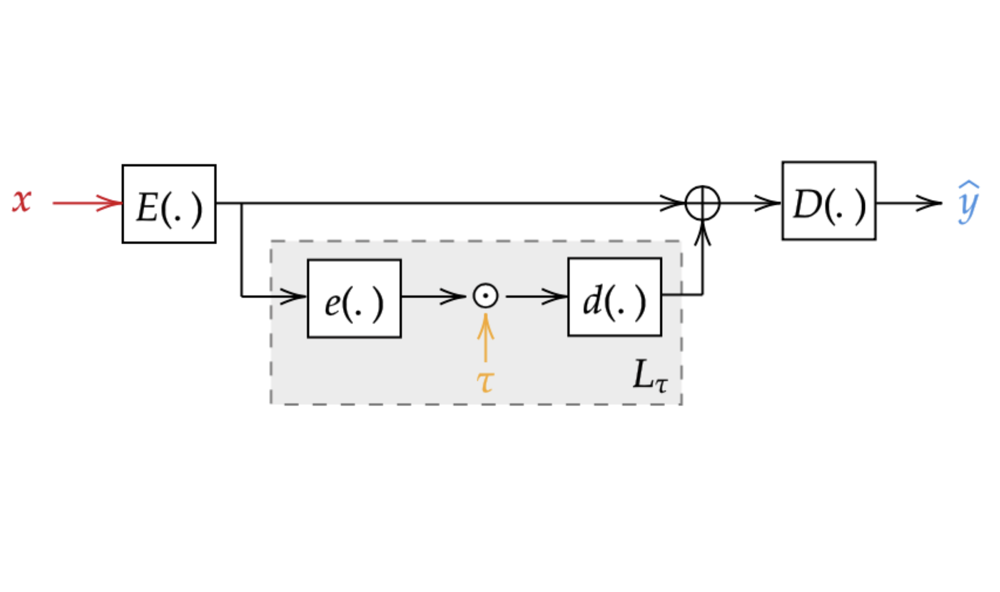

Graph Neural Solver for Power Systems
We propose a novel approach to emulate the behavior of a physics solver based on Graph Neural Networks.

My work is mainly focused on creating novel methods based on Graph Neural Networks to model, predict and control power systems. I hope this blog will provide an insightful overview of my work. I will be happy to discuss if you contact me at balthazar.donon@rte-france.com

However, recent trends in the Energy domain push TSOs to reconsider their conception of security. The GARPUR consortium advocates for a probabilistic approach to risk estimation for power systems. However, limitations of current methods in terms of computational speed prevents TSOs to fully achieve this goal.
RTE (Réseau de Transport d'Électricité), which is the French TSO, is thus investigating the use of fast and parallel deep learning methods to speed up computations, and control the topology of power grids.

We propose a novel approach to emulate the behavior of a physics solver based on Graph Neural Networks.

We propose an architecture that is able to encode in its architecture small variations with regards to a reference situation.
After two years of "classe préparatoire" in Paris, where I studied Mathematics and Physics, I got accepted at the École polytechnique in Saclay. My curriculum focused mainly on Physics, Mechanics and Applied Mathematics. During my third year at the École polytechnique, I graduated in "Energies of the XXIst century". I then obtained a Masters of Science degree in "Atmosphere / Energy" at Stanford University in California. The year and a half I spent on Stanford University's campus has been the occasion for me to deepen my knowledge of energetical and environmental issues, as well as to discover the booming domain of Machine Learning. I am now pursuing a PhD in Computer Science at the Université Paris Sud, in partnership with RTE.

PhD Student @ LRI & RTE
Deep Learning for Power Systems